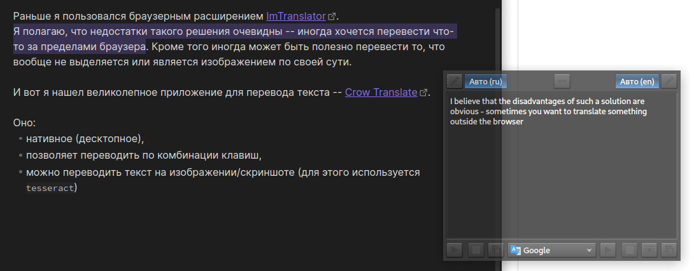

Crow Translate#
Раньше я пользовался браузерным расширением ImTranslator. Я полагаю, что недостатки такого решения очевидны – иногда хочется перевести что-то за пределами браузера. Кроме того иногда может быть полезно перевести то, что вообще не выделяется или является изображением по своей сути.
И вот я нашел великолепное приложение для перевода текста – Crow Translate.
Оно:
нативное (десктопное),
позволяет переводить по комбинации клавиш,
можно переводить текст на изображении/скриншоте (для этого используется
tesseract)
Скриншоты#


Волков Николай